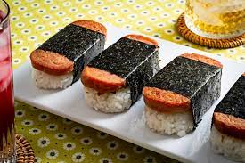

Spam Musubi

Description
Spam musubi is a snack and lunch food composed of a slice of grilled Spam sandwiched either in between or on top of a block of rice, wrapped together with nori in the tradition of Japanese onigiri.
Ingredients
- 12 ounces of Spam (about 2 cans)
- Oyster sauce
- 1/4 cup soy sauce
- 1/2 cup sugar
- Nori roasted seaweed used for sushi cut into halves or thirds (thirds make it wrap around further)
- 6 cups of cooked sushi rice without vinegar added
Preparation
Original Recipe
- Slice the SPAM into about 8-10 slices (depending on how thick you like it) and put in a Ziplock bag.
Mix oyster sauce, soy sauce and sugar until sugar is dissolved and add to the bag with the SPAM. Marinate for about 15 minutes.
- Drain off marinade and fry Spam on each side over medium heat until slightly crispy or at your desired doneness.
Some people like to glaze the Spam with the marinade after frying, it's up to you!
Assembly
- Place a strip of nori on your work surface shiny side down.
Place your Musubi mold across the middle of the nori. Add sushi rice to the mold (the Spam can), pressing down firmly and evenly, so there is about 1-1 1/2 inches of rice.
Dip the mold and your fingers in water as you go to prevent sticking.
- Remove the mold from the rice and lay it right onto the nori.
Add a slice of the cooked Spam on top. Wrap up one side of the nori and stick it to the top of the SPAM, then wrap up the other side. Use a little water on your finger to seal if needed.